Week Ahead: The AI Rout Meets Thanksgiving — Dell Tuesday, PCE Wednesday, and a Tape at Extreme Fear
By Hedgewiz — for OptionsWizard members. Week of Nov 23–27, 2026. All levels from Friday Nov 20 closes and Friday's options book, drafted Saturday Nov 21, 2026 (Los Angeles). Market insights only. Markets closed Thursday Nov 26 for Thanksgiving; early close (1:00 PM ET) Friday Nov 27.
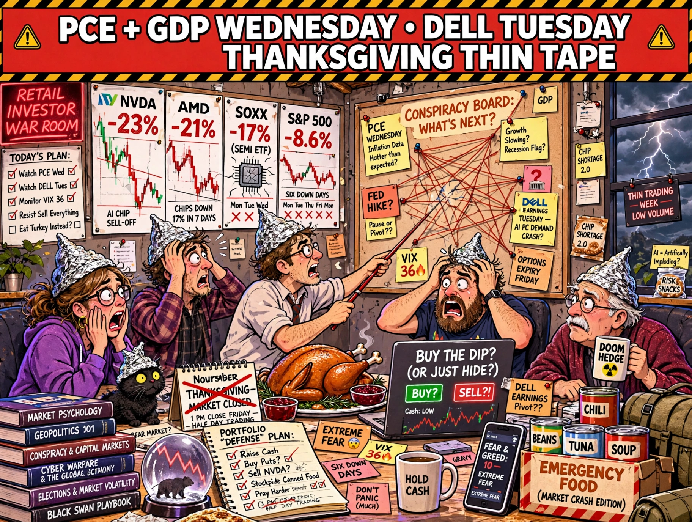
The week in one paragraph
Seven straight down sessions, and then the tape bounced after the bell. The S&P 500 fell 8.6% on the week to 6,910.39 (SPY closed at 689.81) — its seventh consecutive daily loss, the longest streak since February 2020 — the Nasdaq Composite fell 10.0%, and chips fell 17.4% as the AI trade unwound: Nvidia −22.9% on the week, AMD −20.5%, Dell −19.3% into its own earnings report; Alphabet fell 10.3% and Carnival 9.0%. The VIX closed at 35.89, up 86% on the week, and the Fear & Greed index reads 10 — Extreme Fear, its lowest since March. Then Friday's book closed with a bounce in extended hours: Schwab's last after-hours quotes showed SPY at 697.48 and Nvidia at 130.03, both well above the regular-session closes — after-hours quotes, not closes, but the first sign of buyers stepping in. This week is three verdicts in three days: Dell's earnings report Tuesday after the close is the AI-hardware verdict, Wednesday brings the biggest data dump of the month — Q3 GDP and October PCE, the last inflation read before the December Fed meeting — and then Thanksgiving thins the tape to a half-day Friday. The options book is hedged, positioned for a bounce it does not yet believe in, and short gamma below spot — a tape that can move fast in either direction once Wednesday's numbers land.
The bias, briefly
Bearish on trend, neutral into Wednesday — and honest about why: SPY sits below both its 50-day (760.18) and its 200-day (732.76), only 25.7% of stocks sit above their 50-day, and the week's sector tape is defensive (staples −2.1% was the "best" sector). But the tape is also deeply oversold — Fear & Greed 10, total put/call 1.13, NAAIM exposure cut by almost 40% to 51% — and Friday's after-hours bounce says shorts are nervous too. The read: let Dell and Wednesday's data arrive before deciding what the selloff means. A clean Dell report plus a PCE that does not force a bigger December hike is a bounce setup into Friday's short session; a hot PCE that puts a 50-basis-point hike on the table breaks the 675 SPY put wall and turns the same book into a fast tape down. Do not chase shorts into Extreme Fear, and do not buy the dip without a level.
Key levels, from the options book
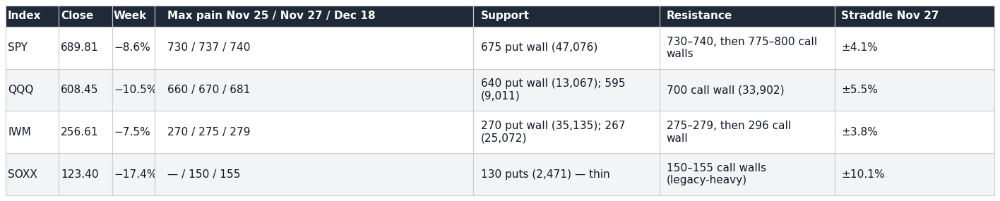
SPY (Friday close 689.81; −8.6% on the week; 50-day 760.18, 200-day 732.76). Max pain 730 (Nov 25), 737 (Nov 27) and 740 (Dec 18) — all 6–7% above spot, so the book is positioned for a bounce, not a pin at spot. Support is the 675 put wall (47,076 contracts); the 700 put wall (59,116) is now above spot — the tape fell through it on Friday. Resistance is the 730–740 max-pain zone, then the 775–800 call walls. The Nov 25 straddle priced ±3.7%; Nov 27 ±4.1%; Dec 18 ±6.9%.
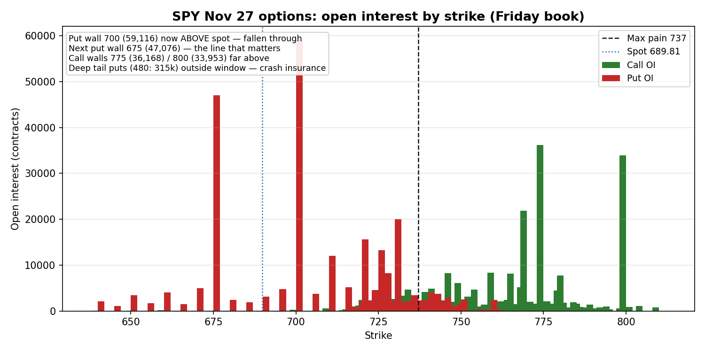
QQQ (Friday close 608.45; −10.5% on the week; 50-day 710.96, 200-day 683.06). Max pain 660 (Nov 25), 670 (Nov 27) and 681 (Dec 18) — 8–12% above spot, the widest gap of the four. Support is the 640 put wall (13,067) with 595 behind it (9,011); resistance is the 700 call wall (33,902). The Nov 25 straddle priced ±5.1%; Nov 27 ±5.5%; Dec 18 ±9.1%. QQQ is the weakest index tape in the room: 14% below its 50-day and 11% below its 200-day.
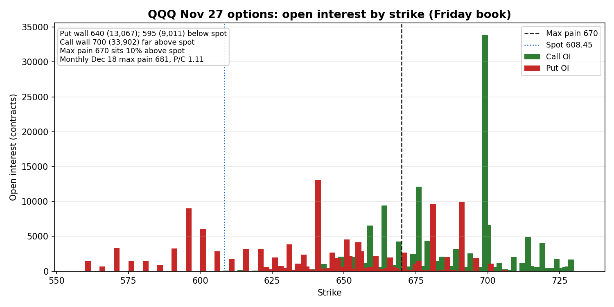
IWM (Friday close 256.61; −7.5% on the week; 50-day 278.26, 200-day 279.57). Max pain 270 (Nov 25), 275 (Nov 27) and 279 (Dec 18). Support is the deepest put book of the four — 270 (35,135) and 267 (25,072); resistance is 275–279, then the 296 call wall (12,156). The Nov 25 straddle priced ±3.5%; Nov 27 ±3.8%; Dec 18 ±7.1%. Small caps carry the most put-heavy book of the four (put/call 3.12) — the hedge is real, but so is the fragility if 270 breaks.
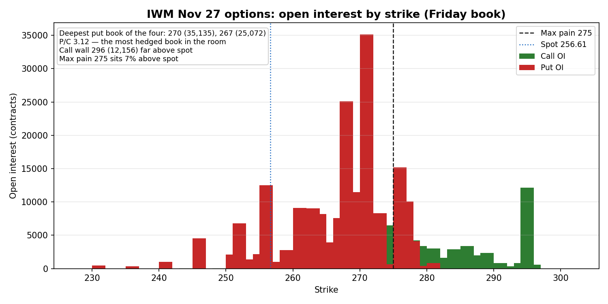
SOX / semiconductors — read through SOXX (Friday close 123.40; −17.4% on the week; 50-day 168.11, 200-day 160.86). Max pain 150 (Nov 27) and 155 (Dec 18) — treat those with care: they are pulled above spot by split-adjusted legacy call strikes (the old 490 strike is now 163.33; the 161.67 call wall holds 11,823 contracts). The actionable levels are the thin near-money walls — 130 puts (2,471) below spot and the 150 call wall above — and the 120 put wall on the December book (20,422). The Nov 27 straddle priced ±10.1%; Dec 18 ±18.4% — still the widest of the four, because chips just had their worst week of the year and nobody is pricing a quiet one next. There is no Nov 25 expiry in SOXX.
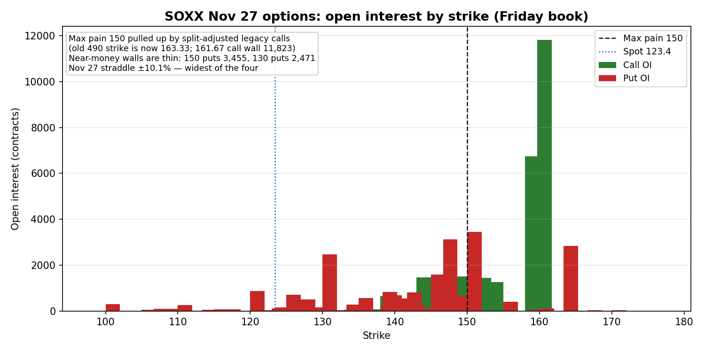
Earnings previews with expected moves (flagship section)
Expected moves below are the Nov 27 at-the-money straddle from Friday's Schwab book — the size of the move the options market is pricing in, not a direction. Single names carry Friday-weekly expiries only, so each Nov 27 straddle covers the earnings move plus the days to Friday's expiry. For scale: the average S&P 500 name moved about 5% in the session after its Q3 report so far this season. Past reactions are the close-to-close move across the two days around each of the last three reports — history, not a promise. Tuesday is the busiest earnings day of the week, with 40 companies reporting. No Mag 7 name reports this week — Dell is the whole week.
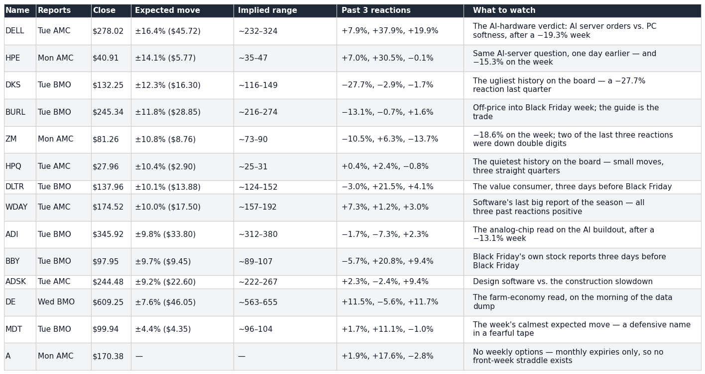
Also reporting: BHP (Tue, timing not set), Symbotic and Jacobs (Mon AMC), Nutanix and Urban Outfitters (Tue AMC), Smucker and Dycom (Tue BMO), Li Auto (Wed BMO). No S&P 500 names report Friday.
DELL — Tuesday after the close (Friday close 278.02; −19.3% on the week, −15.3% for HPE alongside it). Expected move ±16.4% (Nov 27 straddle $45.72), for a range roughly $232–$324. The estimate is ~$6.55 a share on ~$49–50B revenue. What to watch is one number: AI server orders. Dell is the purest AI-hardware earnings report left this season, and it reports into a tape that just took Nvidia down 23% in a week on the same AI question. Past earnings releases all point the same way — the last three reactions were +7.9%, +37.9% and +19.9% — but all three came with the AI story intact, and this one does not. The book leans call-heavy on paper (put/call 0.45), but that is flattered by far-out legacy calls at 400 and 500; near the money it is balanced, with the biggest walls at the 250 puts and the 320 calls. A beat that re-opens the AI order book runs toward 320; a guide cut breaks 250 and the week's trade idea with it.
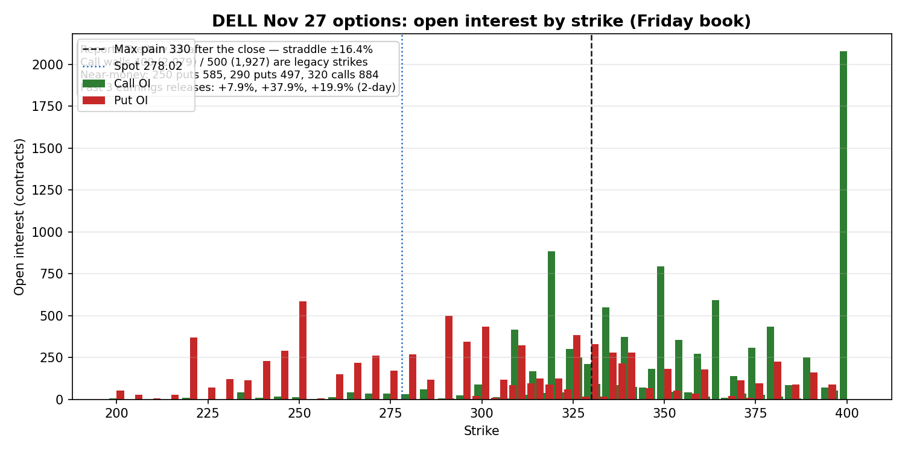
DE — Wednesday before the open (Friday close 609.25; −9.5% on the week). Expected move ±7.6% (Nov 27 straddle $46.05), for a range roughly $563–$655. The estimate is ~$4.07 a share. What to watch: the farm economy — equipment demand, dealer inventories, and the 2027 outlook — reported on the same morning as GDP and PCE, so the stock may move on the macro before the market even reads the quarter. Past reactions: +11.5%, −5.6%, +11.7%.
ADI — Tuesday before the open (Friday close 345.92; −13.1% on the week). Expected move ±9.8% (Nov 27 straddle $33.80), for a range roughly $312–$380. The estimate is ~$3.89 a share. What to watch: analog is the quiet corner of the AI buildout — industrial and auto demand, not data-center headlines — and the past three reactions (−1.7%, −7.3%, +2.3%) say the market has not rewarded this name for beating. The book is put-heavy (put/call 1.27) with the biggest walls at the 370 puts.
HPE — Monday after the close (Friday close 40.91; −15.3% on the week). Expected move ±14.1% (Nov 27 straddle $5.77), for a range roughly $35–$47. The estimate is ~$1.18–1.29 a share. What to watch: HPE reports first, Dell second — Monday night's number sets the bar for Tuesday night's. Past reactions: +7.0%, +30.5%, −0.1%.
Breadth & sector rotation
Verdict: BROAD SELLING, NARROW EVERYTHING — 60.6% of stocks sit below both their 50- and 200-day averages. This is not a narrow rally; it is a broad rout with a few leaders still standing near highs.
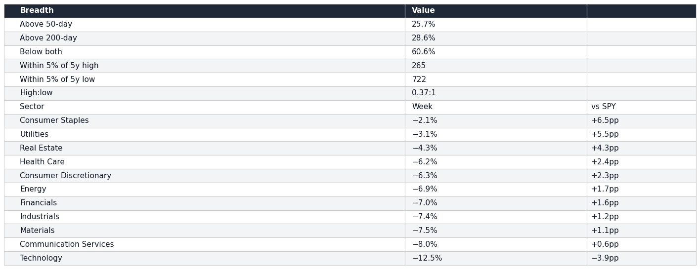
- Every sector fell; the "leaders" are just the ones that fell least — staples and utilities, the classic hiding places.
- Technology lagged by 3.9 points — the AI unwind is a tech story first and a market story second.
- What to watch: breadth above 50% over the 50-day is the repair signal. Until then, every bounce is a bounce inside a downtrend, and the 265 names still near highs are the watchlist, not the market.
Breakouts of the week
The backtest verdict first, because it governs how to read this list: buying a ≥15% weekly breakout as-is does NOT beat the market — only 45.5% of signals beat SPY at 4 weeks (median −1.79 points), and the HOT (≥25%) version is worse (43.7%, median −2.88 points). The mean is lifted by a few huge winners. These are names to study and watch, not names to chase — every one below carries its catalyst and its trigger. Only 7 names cleared the screen this week, in a tape that fell 8.6%.
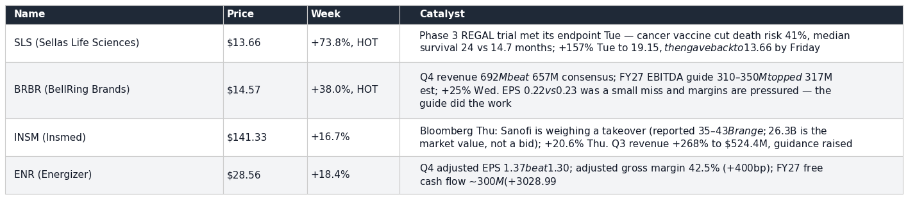
- Watchlist, not buy-now: SLS — hold above $12, next catalyst is the FDA meeting on an accelerated filing. BRBR — hold above $13 after the earnings gap. INSM — a deal confirmation, or a close above $150, is the trigger; a denial of talks unwinds the premium fast. ENR — hold above $26; the margin story is real, the revenue line still shrank 4.8%.
- The honest read: in a week the market fell 8.6%, all four breakouts are single-stock stories — a trial win, a guide raise, a takeover report, a margin beat. None of them is a market signal. Study them; do not chase them.
Future giants watch
Same backtest honesty applies: the giants price setup (within 15% of a 3-year high, above the 50- and 200-day, high growth) does NOT beat the market after the signal — only 44.1% beat SPY at 4 weeks (median −1.16 points), and the growth/margin filters themselves are untested with free data. These are long-term watchlist names, not this week's trades. Three to follow:
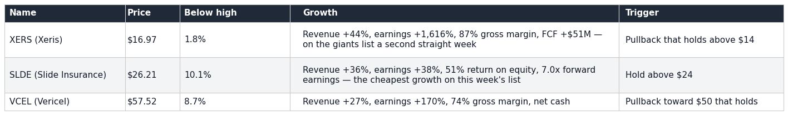
Also on the list: SBRA (Sabra Health Care REIT, revenue +32%) and LFST (LifeStance Health, revenue +25%, earnings +2,021%). Five names total cleared the screen, from 151 price candidates.
Insider clusters
- Verdict: a few genuine signals, the rest is financing. The top-dollar rows in the 30-day Form 4 window are again biotech financings dressed as insider buying — a single fund writing a $65–83M check is not conviction, it is a capital raise. Read past them.
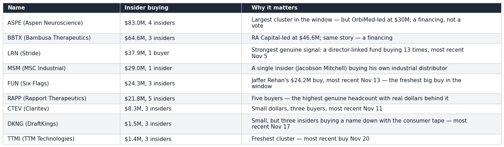
- Breadth of the signal: 102 clusters flagged in 30 days, including 8 insiders at MTDR and 8 at LRMR — but cluster counts alone do not make a case; the dollars and the buyer matter more than the headcount.
Short squeeze watch
Short interest is reported twice monthly with roughly a 2-week lag — these are the latest REPORTED figures (as of Nov 15), not live short interest. Flagged: 18 names, 5 HOT, 15 prime setups (flagged + on a strength list).
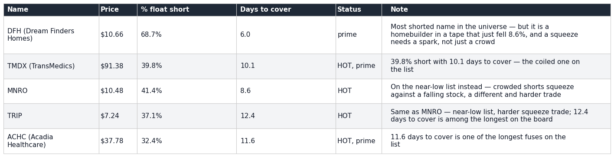
Also prime: RUN (Sunrun, 35.1% short, 8.6 days), ARRY (Array Technologies, 32.9%, 5.7 days), CMCO, CAPR, BOBS, EVER, PAR, BKH, ENOV, AEVA, PPLI, DUOL — all flagged and on a strength list. A squeeze needs a spark; a crowded short alone is just a crowded short.
Crowded trades / sentiment
Retail is terrified, institutions are cutting exposure, and the money is rotating back into the big index funds even as it leaves the leveraged ones: AAII bears outnumber bulls 42.2% to 33.3%, yet US equity funds took in $45.71B for the week ended Nov 18 — the largest since Sep 23 — with large-cap +$31.7B and tech +$10.3B, while bond funds lost $5.58B and money-market funds lost $19.12B. The Fear & Greed index sits at 10 (Extreme Fear), down 28 points on the week, and the total put/call ratio is 1.13. Margin debt is $1,448.4B, at the 92nd percentile of three years — leverage is high even as sentiment is fearful, which is the combination that makes a tape move fast in either direction. In futures, Nasdaq 100 leveraged funds sit near-max long (88.6th percentile) while the index fell 10.4% on the week. Crypto is still unwinding: spot BTC ETFs lost $1.25B for Nov 16–20, ETH $221.7M. One more note: MSTR closed at $77.80 (−30.3% on the week) with its mNAV at 0.72x — still below the 1.0x level, so no signal there. And the social tape is split: Stocktwits has ANT and NVDA retail sentiment "extremely bullish" even as both fell (ANT −9.1% Friday, NVDA −14% Friday) — retail buying the dip into the AI rout — while r/WallStreetBets pessimists are the majority, debating "Black Monday or oversold bounce."
AAII survey (week ending Nov 18):
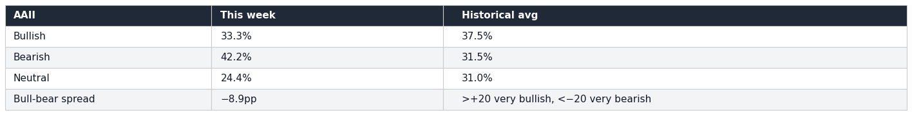
Bears are elevated but not at panic levels in the survey — the panic is in the Fear & Greed index and the flows, not in what retail tells the survey. The gap between the survey and the flows is the week's sentiment story: scared in words, buying the index in deeds.
Smart money — index futures (COT as of Nov 17):
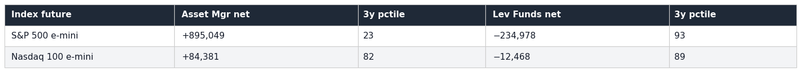
Leveraged funds are near-max short the S&P (93rd percentile) and near-max short the Nasdaq too (89th) — the fast money is positioned for more downside, not a bounce. Asset managers sit low on the S&P (23rd percentile) and high on the Nasdaq (82nd) — the institutional side is not crowded in one direction.
Commodities — managed-money net long (COT as of Nov 17):
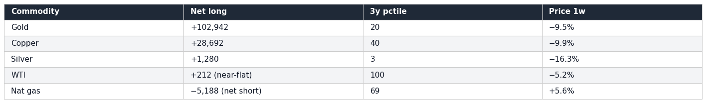
No crowded-long setup fires: gold and silver specs are lightly positioned after the selloff, and the WTI 100th-percentile reading is a near-flat +212 contracts — the percentile reflects a near-zero 3-year range for the contract, not a large crowded position.
The rest of the dashboard: equity put/call 0.77 (total 1.13, index 1.27; 5-day avg total 1.02); NAAIM exposure 51%, down from 84.02 on Nov 3–5; ETF week to Nov 19: SPY −$7.1B, SOXX −$5.8B, GOVT −$4.5B (biggest weekly outflows), TCAF +$4.7B biggest inflow; most-buzzed of the week (X + r/WallStreetBets, Nov 16–20): NVDA, AMD, ANT, PANW, GOOGL; Reddit NVDA mentions +369% week over week.
Share supply (monthly, as of Nov 7)
- Buybacks still run ~2x issuance in 2026 — S&P 500 buybacks projected ~$1.4T vs US equity issuance ~$700B. The risk is the trend toward crossover in 2027, not the current level.
- The Mag 7 buyback engine is stalling: buyback growth was flat in Q2 2026, hyperscaler buyback growth −64% year over year, and Alphabet bought back $0 in Q1, Q2 and Q3 2026 — its share count actually grew 1.35% year over year. Amazon (+1.15%), Tesla (+18.85%), AMD (+0.74%) and Meta (+0.04%) are all net issuing too.
- Top 5 buyback leaders (TTM dollars): Apple $86.4B, Nvidia $57.4B, Salesforce $35.1B (19.95% of its market cap — the highest yield on the list), Bank of America $25.6B, JPMorgan $24.5B.
- Lockups coming up: Anthropic's staged lockup starts Dec 15 (then Jan 5, Jan 19, Feb 2; full freedom May 17, 2027) — the first test of whether the IPO week's holders sell into the first release. A cluster of small-cap lockups expires Dec 1–7 (SPCX Dec 1, LIME Dec 2, FCBM, KARD and FISN Dec 7).
Positioning deep-dive
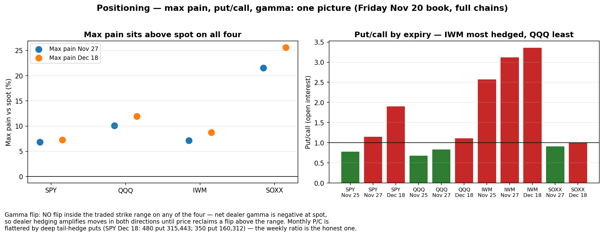
The two expiries tell the same story, which is itself information — and SOXX's max pain is pulled above spot by split-adjusted legacy call strikes (the old 490 is now 163.33).
There is no gamma flip inside the traded strike range on any of the four indexes: net dealer gamma is negative at spot on all of them. Dealers are positioned in a way that tends to amplify moves in both directions — selling into weakness and buying into strength — until price reclaims a flip above the range. There is no clean positive-gamma pin this week; the max-pain levels are where the book balances, not where it protects, and they sit 6–12% above spot on SPY, QQQ and IWM (SOXX higher still, at ~22%, on legacy strikes), which is the book saying a bounce would hurt sellers least.
The monthly SPY put/call ratio (1.90) is tail-hedge noise — the book is dominated by deep strikes like the 480 put (315,443 contracts) and the 350 put (160,312), against a 151,639-contract call wall at 800. Those are not bets that SPY goes to 480; they are crash insurance, and they stay on through every expiry. The weekly ratio is the honest one. QQQ is the cleanest book of the four, IWM the most hedged. DELL's 0.45 looks call-heavy until you see where the calls sit (400 and 500, from when the stock lived there). A put/call ratio alone lies — always ask where the open interest lives before concluding what it means.
Full macro calendar
- Mon Nov 23, 8:30 AM ET — Chicago Fed National Activity Index; 9:45 AM ET — S&P Global flash manufacturing & services PMIs (Nov). Why it matters: the first read on November activity, and the week's setup day — a weak PMI reading into an oversold tape tests whether the bounce has legs. Also: NY Fed President Williams speaks; HPE, Agilent and Zoom report after the close.
- Tue Nov 24, 9:00 AM ET — S&P/Case-Shiller home prices; 10:00 AM ET — Conference Board consumer confidence (Nov, 92.0 expected vs 91.7 in October); Richmond Fed manufacturing index. Why it matters: the consumer's own verdict three days before Black Friday, on the busiest earnings day of the week (40 names). Also: ADP weekly employment; API crude stocks; Dell, HP and Autodesk report after the close.
- Wed Nov 25, 8:30 AM ET — THE DATA DUMP: Q3 GDP second estimate, October PCE and core PCE, personal income & spending, durable goods orders, initial jobless claims (moved up from Thursday). Why it matters: PCE is the Fed's preferred inflation gauge and the last big inflation reading before the December 8–9 FOMC, where a 25bp hike is ~99% priced and some officials have floated 50bp. A hot core PCE puts the bigger hike on the table; a soft one takes it off. Also: new home sales 10:00 AM; EIA crude stocks 10:30 AM; Fed Beige Book 2:00 PM; Deere reports before the open. The Fed blackout period begins Saturday Nov 28 — after Wednesday, no official speaks until the decision.
- Thu Nov 26 — Thanksgiving. Stock and bond markets closed. No data, no earnings. The turkey is the only event.
- Fri Nov 27, 8:30 AM ET — Goods trade balance, wholesale & retail inventories; markets close early (stocks 1:00 PM ET, bonds 2:00 PM ET). Why it matters: a half-day of thin Black Friday tape after the week's two verdicts — moves are exaggerated in both directions on low volume. Also: no S&P 500 names report.
- Looking ahead: JOLTS Tue Dec 1; November jobs report Fri Dec 4; FOMC decision Wed Dec 9; November CPI Thu Dec 10.
Rates, oil, gold — one line each
- Rates: the 10-year closed Friday at 4.91%, down from 5.15% a week earlier — yields fell as stocks sold off, so the rate market is confirming the flight-to-safety bid this time; the 30-year mortgage is 7.28%, up from 7.11%.
- Oil: WTI about $83.98, down 5.2% on the week — still sliding, which is the one cleanly dovish input into Wednesday's inflation data.
- Gold: about $3,515.40, down 9.5% on the week — the safe haven gave back hard as everything sold; silver fell 16.3% and Bitcoin fell 13.8% on the week to ~$58,799.
Three trade ideas (defined risk)
These are ideas for study, priced from Friday's Schwab book. All three expire Friday Nov 27 — a short session — so they must survive Dell Tuesday and the data dump Wednesday.
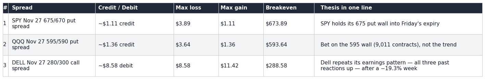
1. SPY bull put spread into Friday's expiry — Nov 27 675/670 put spread, about $1.11 credit (sell the 675 put at 7.52, buy the 670 put at 6.41). Width $5, max loss $3.89, breakeven $673.89. The thesis is not "the bottom is in"; it is "SPY does not fall through its own put wall in the same week." The short strike sits on the 675 put wall (47,076 contracts) — the biggest put wall below spot after the tape fell through 700 on Friday. The risk: the spread expires Friday, so it must survive Dell Tuesday and the PCE dump Wednesday. Size it for the possibility that it does not.
2. QQQ bull put spread into Friday's expiry — Nov 27 595/590 put spread, about $1.36 credit (sell the 595 put at 9.80, buy the 590 put at 8.44). Width $5, max loss $3.64, breakeven $593.64. The short strike sits on the 595 put wall (9,011 contracts) — the level the Nasdaq book itself defends below spot. Same expiry risk as idea 1. QQQ is still 11% below its 200-day, so this is a bet on the wall, not on the trend — and the credit covers 27% of the width, which is the whole point of picking the wall over the trend.
3. DELL bull call spread into the earnings report — Nov 27 280/300 call spread, about $8.58 debit (buy the 280 call at 22.08, sell the 300 call at 13.50). Width $20, max gain $11.42, breakeven $288.58 (+3.8% from Friday's close). The short strike sits at the top edge of the recent range and the long strike just above spot. The thesis: Dell's last three earnings reactions were +7.9%, +37.9% and +19.9%, the stock is down 19.3% into the report, and the straddle prices ±16.4% — the upside leg of the expected move pays more than the debit if the pattern repeats. Note the 280 call showed only 31 contracts of open interest, so treat the fill as approximate and work the order. If it gaps below $288.58, the trade is wrong and the defined loss is the cost of being wrong — keep it small, because a 16.4% expected move cuts both ways.
And the standing lesson from last week, worth repeating because it just paid out in reverse: earnings gaps do not respect stop losses. Nvidia's −22.9% week after a blowout quarter and Dell's −19.3% week into its own report are what "defined risk" is for. Naked premium into a known event is picking up pennies in front of a steamroller that has a schedule — and never write options right after an earnings report, when the premium has already crashed.
Bottom line
This week is three verdicts in three days: Tuesday night is the AI-hardware verdict — Dell's earnings report, with a ±16.4% expected move and three straight positive reactions behind it, into a tape that just took Nvidia down 23%; Wednesday morning is the macro verdict — GDP and PCE, the last inflation read before a December hike that is ~99% priced; and Friday is the liquidity verdict — a half-day of thin Thanksgiving tape that exaggerates whatever the first two days decided. The options book says hedged, positioned for a bounce it does not believe in, and short gamma below spot — a tape that can move fast in either direction once Wednesday's numbers land. Position for the IV crush after the earnings reports, keep the risk defined, and let the week's information arrive before deciding what it means.
For education only — not financial advice. All prices and options levels are from Schwab's Friday Nov 20, 2026 book (full chains, range=ALL — max pain and put/call ratios computed from the whole chain, not OTM-only); SOXX is used as the tradable proxy for the SOX semiconductor index, split-adjusted for its 3-for-1 split on Nov 5. Schwab's after-hours quotes (e.g. SPY 697.48) are after-hours levels; regular-session closes are used throughout. Past earnings moves are the close-to-close change across the two days around each of the last three reports, not a promise about this week's earnings reports. The backtest verdicts cited are from our own 3-year scan backtests — breakout and giants rules have not proven an edge, and the brief says so plainly.
This article also appears on the I Am The Casino Substack.